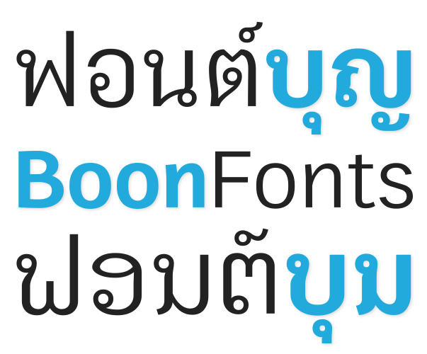

บุญ คือ ชุดตัวอักษรตระกูลหนึ่ง (font family) ที่มุ่งแสดงผลการจัดเรียงตัวอักษรไทยให้ถูกต้องในเว็บบราวเซอร์ ตัวอักษรทุกตัวทั้งไทยและละตินนั้นวาดขึ้นมาใหม่จากรูปทรงเลขาคณิตพื้นฐาน โดยตั้งใจให้สามารถใช้งานเป็นฟอนต์ไทยตัวอ่านมีหัวกลมที่ดูไม่แย่นักในขนาด 14px ขึ้นไป และมีความหนาใกล้เคียงกับตัวละติน
บุญฟอนต์ ได้รับแรงบันดาลใจจากฟอนต์อื่นหลายตระกูล เช่น Roboto, Helvetica (Arial), Thonburi ใน Mac/iOS, Garuda ในชุด Fonts-TLWG และ TH Sarabun New (หรือ SP Laksaman ในชุด ThaiFonts-SiamPradesh ที่ปรับสเกลใหม่)
ตัวอักษรไทยใน บุญฟอนต์ จะเล็กกว่าฟอนต์ไทยทั่วไปเมื่อจับคู่กับตัวละติน (อย่างน้อยก็ฟอนต์ไทยใน Linux ที่ผมใช้งานอยู่) โดยตั้งใจกำหนด ความสูง บ. ให้เท่ากับ x-height (สำหรับ บุญ v0.5 ขึ้นไป ส่วนเวอร์ชั่นก่อนหน้านั้น สูง บ. จะต่ำกว่า x-height) เพราะการเขียนคำไทยนั้นใช้พื้นที่ในแนวตั้งมากกว่าคำภาษาอังกฤษ เพื่อให้ใช้งานฟอนต์ไทยในเว็บได้สบายตาโดยไม่ต้องกำหนด line-height ใน CSS ให้เกิน 1.5em ตัวอักษรไทยไม่แน่นเกินไปและตัวอักษรละตินไม่ห่างเกินไปในแนวตั้ง ถ้าเข้าใจไม่ผิดโดยใช้สายตาวัด ฟอนต์ไทยของ iOS อย่าง Thonburi ก็แก้ปัญหาคล้ายกัน? โดยให้ สูง บ. ต่ำกว่า x-height เล็กน้อย นอกจากนี้บุญฟอนต์ยังมีความหนาของตัวอักษรไทยใกล้เคียงกับตัวละติน บุญตัวหนา จึงหนามากเมื่อเทียบกับฟอนต์ไทยตัวอื่นแต่ดูกลมกลืมเมื่อใช้คู่กับตัวละติน (ถ้าผมไม่คิดไปเองนะ ทดสอบกับ heading text โดยใช้บุญฟอนต์ตัวไทยจับคู่กับฟอนต์ serif อย่าง Georgia ด้วยตัวหนาแล้วก็ยังพอดูได้ เพราะความหนาไม่ต่างกันมาก)
บุญฟอนต์ หวังพึ่ง Anti-Alias หรือ Text Renderer จากระบบปฏิบัติการสมัยใหม่เป็นหลักซึ่งค่อนข้างไว้ใจได้ในคุณภาพการแสดงผล (ยกเว้นคุณยังใช้ Windows XP อยู่!) เพราะผมคิดว่าไม่น่าคุ้มกับเวลาถ้าจะทำ Manual Hint หรือ Grid Fit แค่ใช้ Auto-Hint ใน FontForge ก็น่าจะเพียงพอแล้ว หากใครพบปัญหาหรือบั๊กในการใช้งาน ก็แจ้งเข้ามาได้
© ๒๕๕๖ สังศิต ไสววรรณ
บุญฟอนต์ ใช้สัญญาอนุญาต (license) แบบ GNU GPLv3 (+Font Exception) แปลว่าคุณมีอิสระเต็มที่ในการใช้งาน ดัดแปลง หรือปรับปรุง โดยไม่ต้องขออนุญาตเจ้าของลิขสิทธิ์ (ไม่จำเป็นต้องบอกผมว่าคุณทำหรือจะทำอะไรกับมัน) เงื่อนไขคือเมื่อดัดแปลงจากต้นแบบแล้วอยากจะเผยแพร่ผลงานใหม่ก็ต้องใช้สัญญาอนุญาตแบบเดียวกันและต้องเปิดเผยซอร์สโค้ดเช่นกัน ส่วนคำว่า +Font Exception ที่ต่อท้ายมานั้นเพื่อบอกผู้ใช้ที่ต้องการฝังฟอนต์ในเอกสารว่าไม่ต้องกังวล เพราะระบุไว้ชัดเจนว่าเอกสารที่เกิดจากการใช้งานฟอนต์นี้ (เช่น html page, pdf เป็นต้น) ไม่จำเป็นต้องใช้สัญญาอนุญาตแบบเดียวกับตัวฟอนต์
บุญฟอนต์ แจกจ่ายและเปิดเผยซอร์สโค้ดด้วยหวังว่ามันจะมีประโยชน์และเป็นส่วนหนึ่งของการพัฒนาฟอนต์ไทยเพื่อให้เหมาะต่อการใช้งานทั้งในโปรแกรมทั่วไปและในเว็บไซต์ และโปรดทราบไว้ล่วงหน้าว่าคุณต้องยอมรับความเสี่ยงจากการใช้งานฟอนต์นี้เอง ผู้พัฒนาไม่ต้องรับผิดชอบต่อความเสียหายที่อาจจะเกิดจากการใช้งานฟอนต์นี้ ไม่ว่ากรณีใดๆ
คุณสามารถดาวน์โหลดไฟล์ฟอนต์เวอร์ชั่นล่าสุดได้ที่ Boon releases หรือถ้าต้องการซอร์สไฟล์และวัตถุดิบสำหรับเอาไปพัฒนาต่อ ก็ไปที่ Boon-Dev Repository ซึ่งคุณสามารถโคลนทั้งโปรเจ็คต์ด้วย Git เพื่อดัดแปลงด้วยโปรแกรม FontForge หรือโปรแกรมวาดภาพเวคเตอร์อย่าง Inkscape ซึ่งผมใช้วาด glyph ไว้เป็นไฟล์ .svg ก่อน generate ด้วย FontForge (ผมแยกไฟล์ฟอนต์กับซอร์สโค้ดออกจากกันตั้งแต่ Boon v0.5 เพราะไฟล์มันเริ่มเยอะและใหญ่มาก หลายคนที่ต้องการแค่ไฟล์ฟอนต์จะได้ไม่เสียเวลาดาวน์โหลดซอร์สทั้งหมด แต่ยังคงใช้สัญญาอนุญาตเดียวกันเหมือนเดิม ดูรายละเอียดใน Fontlog)
ติดตั้งไฟล์ฟอนต์ประเภท OpenType จากโฟลเดอร์ /fonts/otf/ ซึ่งน่าจะใช้งานได้ปกติกับระบบปฏิบัติการและโปรแกรมที่รองรับ OpenType
ใช้ไฟล์ฟอนต์จากโฟลเดอร์ /fonts/woff/ สำหรับไฟล์ .woff ก็คือ TrueType นั่นเอง แต่ห่อและบีบให้ขนาดเล็กลงเพื่อให้เหมาะต่อการใช้งานในอินเตอร์เน็ต นั่นเป็นเหตุผลที่บุญฟอนต์ไม่มีไฟล์ .ttf ให้ เพราะ.otf กับ .woff ก็เกินพอ
การใช้ฟอนต์ไทยในเว็บไซต์นั้นจำเป็นต้องใช้ CSS และ โชค เข้าช่วย โชคในที่นี้หมายความว่าเว็บบราวเซอร์แต่ละตัวรองรับ OpenType Features ไม่เท่ากัน แม้จะใช้ @font-face ก็ตาม
ณ เวลาที่เขียน แม้ไม่ได้ทดสอบแต่ก็แน่ใจว่า บุญฟอนต์ไม่สนับสนุนการใช้งานกับบราวเซอร์รุ่นเก่าหลายรุ่น ตัวอย่างเช่น Internet Explorer ก่อนรุ่น 9 และ mobile browser อีกหลายตัว เพราะถึงแม้ IE รุ่นเก่าจะสามารถใช้งาน @font-face กับไฟล์ .eot ได้ หรือบราวเซอร์ในอุปกรณ์เคลื่อนที่รุ่นเก่าจะเรียกใช้ฟอนต์จากไฟล์ .svg ได้ แต่เท่าที่ผมจำได้ไฟล์พวกนี้ไม่รองรับ opentype features นั่นเป็นเหตุผลที่วรรณยุกต์ไทยต้องลอยสูงไว้ก่อนเพราะมันเป็นตำแหน่งที่ปลอดภัยที่สุดในบราวเซอร์ที่แย่ที่สุด จริงๆ สามารถใช้งานฟอนต์ไทยทุกตัวกับ IE รุ่นเก่าได้ แต่คุณต้องแปลงฟอนต์ฟอร์แมตเองและต้องยอมรับด้วยว่าวรรณยุกต์ไทยต้องลอยอย่างหลีกเลี่ยงไม่ได้ จะได้ไม่โกรธฟอนต์หรือคนทำฟอนต์! (ผมคิดว่าสำหรับ IE รุ่นเก่านั้นแนะนำให้ผู้ใช้เปลี่ยนบราวเซอร์หรือติดตั้งฟอนต์ไทยเพิ่มในระบบปฏิบัติเองคงง่ายกว่าการแก้ปัญหาด้วยวิธีอื่น!)
คุณสามารถดูตัวอย่างการใช้ CSS กับบุญฟอนต์ได้จากซอร์สโค้ดของหน้าเว็บนี้ หรือจากไฟล์ /css/boon.css และถ้าต้องการใช้คุณสมบัติของฟอนต์อย่างเต็มที่ก็ควรระบุ text-rendering: optimizeLegibility และ/หรือ font-feature-settings ใน CSS ด้วย (โน้ต: text-rendering ไม่ใช่ CSS property และมีผลต่อประสิทธิภาพและความรวดเร็วในการ render ตัวอักษรของบราวเซอร์ - อ่านเพิ่มเติม) เพื่อบอกบราวเซอร์ที่ฉลาดพอให้เรียกใช้งานคุณสมบัติของ OpenType ที่ฟอนต์ตัวนั้นมี (smcp, kern, liga เป็นต้น) แม้บราวเซอร์รุ่นใหม่บางตัวจะเปิดไว้ให้โดยอัตโนมัติสำหรับตัวอักษรขนาดเกิน 20px แล้วก็ตาม
หากคุณไม่เห็นคำว่า บุญฟอนต์ จาก หัวข้อด้านบนสุด เหมือนกับภาพด้านล่างนี้ ก็แสดงว่าบราวเซอร์ที่คุณใช้งานไม่รองรับ @font-face กับไฟล์ .woff ดังนั้นไม่มีประโยชน์ที่จะอ่านต่อ ยกเว้นคุณจะเปลี่ยนบราวเซอร์ซะก่อน

บุญ ๔๐๐ (Boon 400)
บุญ ๔๐๐ เอน (Boon 400 Oblique)
บุญ ๗๐๐ (Boon 700)
บุญ ๗๐๐ เอน (Boon 700 Oblique)
หมายเหตุ: ผมเปลี่ยนชื่อฟอนต์ทั้งหมดใน Boon v0.5 ขึ้นไป โดยใช้เลขน้ำหนักฟอนต์แทนชื่อสามัญ (จริงๆ แล้วบุญฟอนต์ไม่มีตัว Regular เพราะตอนเริ่มต้นผมทำตัวหนาก่อนแล้วค่อยแก้มาเรื่อยๆ แต่โดยทั่วไปแล้ว weight 400 ก็คือตัวอ่านปกติ) นอกจากนี้ก็เปลี่ยนชื่อจาก Italic เป็น Oblique (Slanted) เพราะใช้โปรแกรมทำให้มันเอียงอัตโนมัติ ชาวบ้านจะได้ไม่เข้าใจผิด ในอนาคตคงมีเวลาทำตัว Italic จริงๆ
พยัญชนะบนเส้นฐาน + สระล่าง / วรรณยุกต์ : วรรณยุกต์ต้องอยู่ในตำแหน่งสระบน
ก่อนก้อนก๊กก๋ง ขู่สู้กู๊ดกู๋
พยัญชนะบนเส้นฐาน + สระบน / สระอำ / นิคหิต + วรรณยุกต์ : วรรณยุกต์ต้องอยู่ในตำแหน่งสูงปกติและต้องพิมพ์ก่อนสระอำแต่พิมพ์หลังนิคหิต
กลั่นกรี้ดกั๊กกึ๋น กล้ำบํ๊
พยัญชนะหางบนยาว (ป ฝ ฟ) + สระบน / สระอำ / นิคหิต + วรรณยุกต์ : สระบนและวรรณยุกต์ต้องเยื้องมาทางซ้ายเพื่อหลบหาง (การที่ต้องพิมพ์วรรณยุกต์ก่อนสระอำสร้างปัญหาทางเทคนิคให้ฟอนต์ไทยพอสมควร แทนที่จะพิมพ์นิคหิตตามด้วยวรรณยุกต์และสระอาซึ่งจัดการตำแหน่งได้ง่ายกว่า)
ป็อดฝืนฟ็อกซ์ฟู่ฟ่าปู่ป้าเป่าปี่เฝ้าฝิ่นฟ้าฝ่าป๋าปั้นปุ๊ฟ้ำป๋ำปื๋ยปื๊ด
พยัญชนะมีฐานล่าง (ฐ ญ) + สระล่าง : ต้องตัดฐานล่างของพยัญชนะออก
ฐัญฐุญฺวิญญูฐูญุฐฺญู้ญี่
อักษรละตินบางตัวต้องจัดการความห่างในแนวราบระหว่างกันเป็นพิเศษ เช่น ตัว T, A, V, W, Y ใหญ่ กับ ตัวอักษรเล็กอื่นๆ อีกหลายตัว เพื่อไม่ให้มันดูห่างกันมากเกินไป เว็บบราวเซอร์ส่วนใหญ่จะไม่เรียกใช้ Kerning feature จากฟอนต์จนกว่าจะระบุใน CSS ด้วย text-rendering: optimizeLegibility (โดยปกติตัวอักษรไทยไม่ต้อง kern ในแนวราบก็ได้ ยกเว้นสระหน้าตัวสูงอย่าง โ ใ และ ไ เพราะพยัญชนะแต่ละตัวใช้พื้นที่ว่างค่อนข้างใกล้เคียงกัน และมีตำแหน่งสระบน / สระล่าง / วรรณยุกต์ คอยกำกับระยะห่างเส้นหลังอยู่จึงไม่มีปัญหาแบบตัวละตินเล็ก-ใหญ่)
ATM Avid Away Tony Train TnT Tv Tyson Vocation Vaccine Way Yes Yoga
เปรียบเทียบระหว่างเปิดกับปิด Kerning
Yes ToT
Yes ToT
(โน้ต: ใน FireFox อาจดูไม่ต่างกัน เพราะมัน kern ให้เอง ถ้าตัวอักษรขนาดเกิน 20px)
พยัญชนะหางล่างยาว (ฎ ฏ) + สระล่าง : บุญฟอนต์จะลดความยาวหางพยัญชนะอัตโนมัติเพื่อให้สระล่างไม่อยู่ต่ำจนชนวรรณยุกต์บนของบรรทัดล่าง ในกรณีที่ต้องใช้ ฎ ฏ ตามด้วยสระล่างมากเป็นพิเศษ เช่น คำอาหรับที่ถอดรูปเขียนไทย ควรกำหนด line-height ไม่ต่ำกว่า 1.5em (แต่ส่วนใหญ่คงใช้ตัว ด. และ ต. แทน)
ฏูฎุฏฺฎฺฎฏฏูฎุฏฺกฎ
ฏี้ฎึ๋กี้กรี๊ดฏี่ฏฺ
ตัว ฤ ฦ กับ สระอา : บุญฟอนต์จะเปลี่ยนสระอาให้อัตโนมัติเมื่อพิมพ์ตามหลังตัว ฤ หรือ ฦ (จริงๆ บนแป้นพิมพ์มีสระอาหางยาว - ๅ แต่บางคนอาจไม่คุ้น)
ฤาษีฦา
พยัญชนะหางบนสั้น ช ซ ศ ส ฮ : บุญฟอนต์จะสลับแนวหางให้อัตโนมัติเพื่อไม่ให้ชนสระบนหรือวรรณยุกต์ เหตุผลคือบราวเซอร์บางตัวฉลาดเกินไปจนไม่ยอมให้มี Glyph ทับกัน เป็นผลให้สระบนและวรรณยุกต์ลอยโด่งผิดปกติทั้งบรรทัด
ช่ำชองแซงซ้ำสั่งสอนศาลศึกฮักแฮ